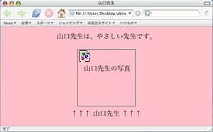

ここでは、ページに写真やイラストなどの画像imageを表示する方法を学ぶ。
サンプル画像のダウンロード
まず、以下の手順でサンプル画像（獅頭山の写真）をデスクトップdesktop（桌面）にダウンロードdownload（下載）する。
- Macintoshの場合
- ［control］キーを押しながらリンク（下の『サンプル画像をダウンロードする』の部分）をクリックする
- 「リンク先を名前をつけて保存／リンクされたファイルをデスクトップに保存」を選ぶ
- 場所に「デスクトップ」を選ぶ
- MS Windowsの場合
- リンク（下の『サンプル画像をダウンロードする』の部分）を右クリック
- 「鏈結另存檔案(K)」を選ぶ
- 儲存於(I):→桌面を選ぶ
→→ サンプル画像をダウンロードする ←←
{kind=link}
img要素について
画像を表示するには「img要素」を用いて、ページの中で画像を表示させたい位置に以下のように記述すればよい。
<img src="〜" width="〜" height="〜" alt="〜" title="〜" />
画像のある場所
「src="〜"」の部分は、表示させたい画像の存在する場所を指示するもので、画像を表示させるときには必須である。ここでは
<img src="./image.jpg" width="〜" height=...
とする。
画像の大きさ
「width="〜" height="〜" 」の部分には、画像を表示する大きさsizeを指示するもので、できるだけ記述した方がよい。サンプル画像はヨコ320×タテ240のサイズなので、ここでは
<img src="./image.jpg" width="320" height="240" alt=...
とする。
画像の代替テキスト
「alt="〜"」の部分には代替テキストを指示する。代替テキストとは、画像を表示しないブラウザbrowserが画像の代わりに表示するテキストのことであり、省略することはできない。〈img要素〉は、画像を表示するブラウザでは「src="〜"」で指示した画像が表示され、画像を表示しないブラウザでは「alt="〜"」の内容が表示される。ここでは
<img src="./image.jpg ... alt="「苗栗の紹介」のページへようこそ" title=...
とする。
↑ 画像を表示する場合

↑ 画像を表示しない場合
代替テキストが必要になるのは、すべてのブラウザが画像を表示するわけではないからである。例えば、テキストブラウザText based browserと呼ばれるブラウザは、一般に、テキストのみを表示するようになっている。画像を表示するブラウザでも、環境設定を変更することで画像を表示しないようにすることができる。また、ユーザuserが利用しているディスプレイdisplayの性能によって、画像を十分に表示できないかもしれない。ユーザに視覚障害があるなどの理由で、音声読み上げソフトを利用しているかもしれない。
ここでは、ブラウザで画像を表示する場合と、表示しない設定にした場合のブラウザでの表示例を示している。画像を表示しない設定にした場合は、画像のアイコンiconとともに代替テキスト（山口先生の写真）が表示されている。この例では、「<img src= ... alt="山口先生の写真" ... />」と指定しているわけである。
しかし、この例のように代替テキストで画像の内容を説明しても、画像を表示できない環境ではあまり意味のないものと言えるかもしれない。顔写真の画像を見せることこそが、画像を表示する目的だからである。
このように、代替テキストを指定することに重要な意味がないと考えられる場合や適当な代替テキストがないと考えられる場合には
alt=""
のように、何も指定しないのが良いとされている。
代替テキストでは、画像の内容を説明するよりも、そこに画像を表示する理由・意図を説明するようにする。そのため「苗栗の紹介」のページでは、『「苗栗の紹介」のページへようこそ』のように指定するのが良いだろう。
画像の付加情報
「title="〜"」の部分には、必要に応じて、画像への付加情報を記述することができる。ここに書かれたテキストは、多くのブラウザで、画像にポインタmouse pointer（カーソルmouse cursor）をあわせたときに小さなポップアップpop-up message（ツールチップtool tip）やステータスラインstatus lineなどに表示される。なお、これは「title属性」と呼ばれるもので、〈head要素〉の中に記述する〈title要素〉とは異なるものである。【→ページにタイトルをつける】

例えば、《title属性》に「title="苗栗縣の獅頭山風景区にある山で撮った写真です。"」と指定すると、ポインタ（マウスで動く矢印）を画像のうえにあわせたときに小さなポップアップ（ツールチップ）（画像上：Firefox）やステータスライン（画像下：iCab）に『苗栗縣の獅頭山風景区にある山で撮った写真です。』という文章が表示される。
ページにサンプル画像を入れる
ページにダウンロードしたサンプル画像を表示するため、「index.html」ファイルに〈img要素〉を追加し、ファイルを保存save（儲存檔案）する。ここでは、見出し〈h1要素〉と本文〈段落要素〉の間に画像を入れることにして、以下の例のように記述する。
...
<head>
<title>苗栗の紹介</title>
</head>
<body>
<h1>苗栗の紹介</h1>
<p><img src="./image.jpg" width="320" height="240" alt="「苗栗の紹介」のページへようこそ" /></p>
<p> 北東の...
なお、〈img要素〉はインライン要素Inline elementsなので〈body要素〉の直接の子要素child elementとすることはできない。したがって、 <p>〜</p>などのブロックレベル要素Block-level elementsの子要素として記述する必要がある。【→ブロックレベル要素とインライン要素】
画像のあるページをブラウザで表示する
保存したファイルをブラウザで開いてみる。ファイルを開く操作は、ファイルをブラウザで開くを参照せよ。
ファイルを開くと、次のように表示されるだろう（Macintosh; Firefoxの場合）。